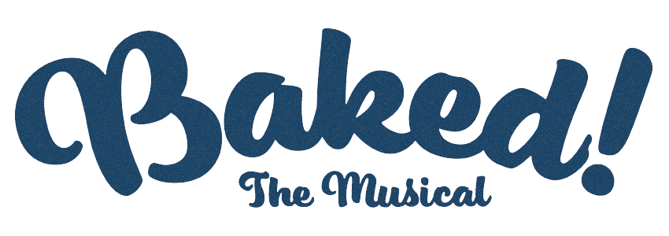

When she doesn’t receive the scholarship that would send her to her
dream school, habitual overachiever Jane Huang, with the help of
her best friend, joins forces with the class degenerate to build
the greatest drug empire ever run by high schoolers. Kept in the
dark are Jane’s parents, whose inability to cope with their
daughter leaving for college while maintaining a profit at their
struggling Chinese bakery drives them to pry and potentially
unravel Jane’s web of lies.
Written and produced by Jordan Liu and Deepak Kumar
Directed by Taylor Stark
Art by Maya Wang
At the Chicago Musical Theatre Festival 2020
cmtf.org